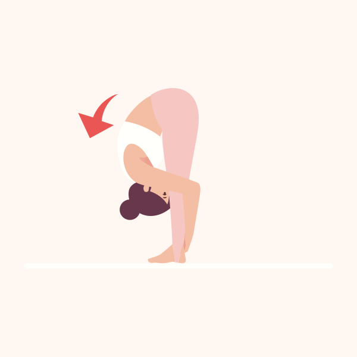
Touch your toes
21 days · back of the legs and lower back
New in 2.0 · iOS & Android · Free plans included
Pick something you want your body to do — touch your toes, sit cross-legged, squat deep. Flexi tests where you start, gives you a plan that gets a little deeper each week, and asks how you feel before and after every session, so you can feel the change. No weight talk, ever.
No account. No sign-in. Your history stays on your device.
Touch your toes · Day 10 of 21
Standing Hamstring Stretch
New in 2.0 · Goals
Five everyday things you might want your body to do with ease. Pick one, and Flexi turns it into a plan with a starting line, small steps and a re-test every week.

21 days · back of the legs and lower back
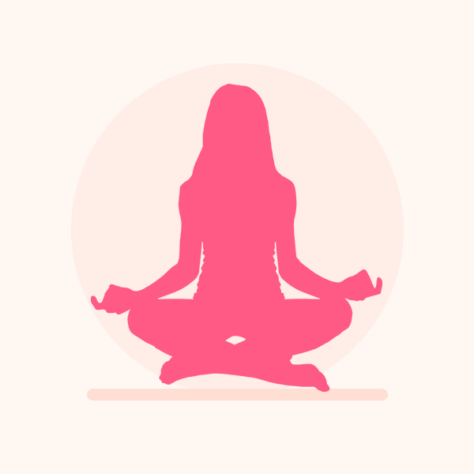
21 days · hips
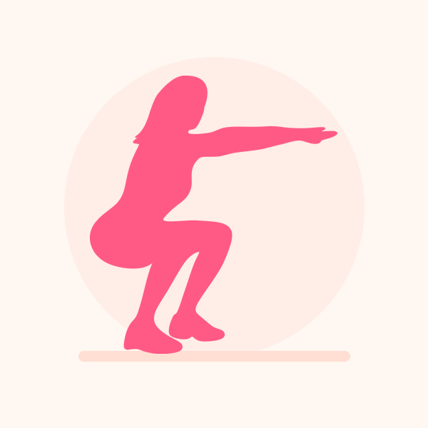
28 days · hips, calves and ankles
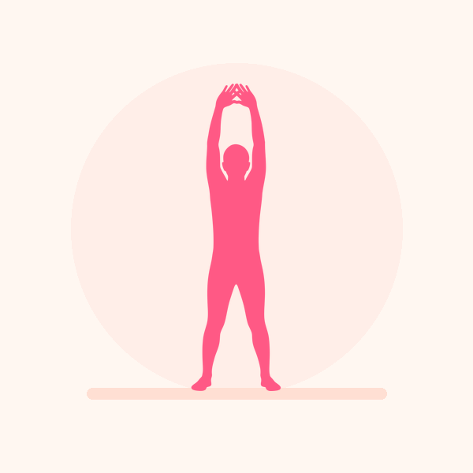
21 days · shoulders and chest
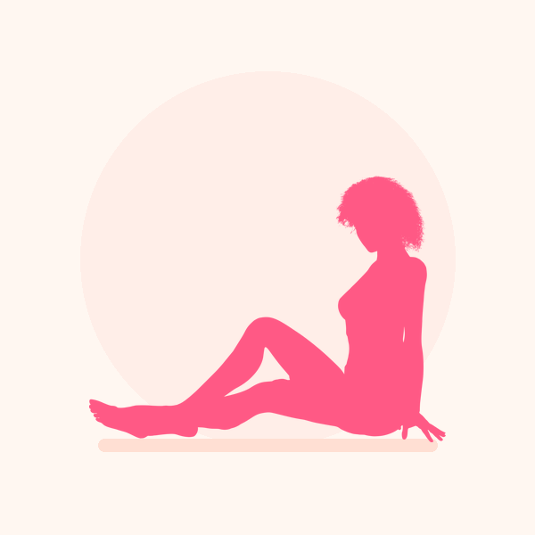
28 days · hips, thighs and back
A one-minute self-test. For toe touches: thighs, knees, shins, ankles or the floor?
Each week brings deeper stretches, not longer holds. Your hold setting is always respected.
Every 7 days — day 7, 14, 21 (and 28) — you test again and see the step you've climbed.
Reach the goal and the next level unlocks. Fall short and the next round starts from where you got to.
Before and after
One tap before you start — how does your back feel? — and the same question at the end. The finish screen shows the difference, and Progress charts it over time, so the change is something you can see as well as feel.
Scale: loose, a little stiff, stiff, tight, very tight.
How it works
Why you're here, where you're tight, anywhere to avoid, how long you've got, how long to hold, and whether you'd like a reminder. One tap each — or skip straight to the plans.
Anything you mark to avoid is filtered out of every plan, not just yours. Your Plan is sized to the 5, 10 or 20 minutes you have, and the full library is still there on the Today screen.
Choose a 20, 30, 45 or 60-second hold. Tap Done to move on when you're ready, or +15s to keep holding. A calm voice and a countdown ring pace every stretch.
One rest day a week won't break your streak, and progress leads with total minutes stretched — a number that only goes up. Nothing to log by hand.
The plans
Every plan is drawn from a catalogue of 50+ illustrated stretches tagged to eight muscle groups: shoulder & neck, back, chest, arms & wrists, glutes, hip flexors, thighs and lower legs.
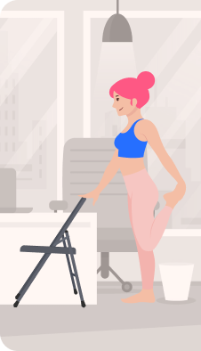
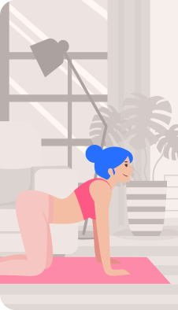
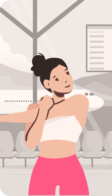
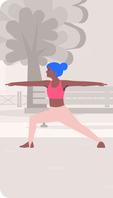
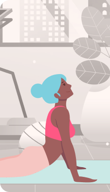

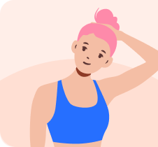
Quads, hamstrings and IT band — the tightness that comes from sitting and from running.
For the ache that builds over a day at a screen. Read the desk guide →
Lower and mid back mobility, done lying down. Read the back guide →
The muscles that shorten from sitting all day. Read the hip guide →
Loosen up before or after dance practice — neck and shoulders for isolations, spine for body waves, hips and ankles for footwork.
During a session
The whole session is designed so you never have to look at the screen to know what is happening — which matters when your face is somewhere near your knee.
Staying in control
A stretching app that cannot be interrupted is a stretching app you stop opening.
Progress
Flexibility comes from showing up often, not from one heroic session. Flexi keeps the score so you can see the habit adding up.
One rest day a week is built in, so a missed day spends the grace instead of wiping your run. Your longest streak stays as a record.
Progress leads with total time stretched, then exercises completed — for the last 7 days, last 30 days, or lifetime.
See the step you've reached on your goal, and a before/after chart of how your body feels — plus one daily reminder at a time you choose, if you want it.
No account and no sign-in. Your stretch history, streaks and settings live on your device. The app sends anonymous usage analytics only — see the privacy policy.
Why ten minutes a day
Consistent stretching is one of the cheapest things you can do for how your body feels day to day. Over weeks of daily practice, people commonly report:
Four guides that cover the questions most people have on day one.
Pricing
You can run a complete session — the timer, the voice guidance, the celebration screen, the streak — without paying anything. Locked plans are marked on their cards, so nothing is ever a surprise part-way through a routine.
$0
Monthly or yearly · real store prices in your currency
Prices always come from the App Store or Google Play in your own currency, so the amount you see is the amount you are charged. Cancelling takes two taps: Settings → Manage Subscription.
FAQ
Yes. Flexi is free to download, and several plans — including Quick Breaks at Work, Thighs, Full Body Reset and K-Pop Dance Stretch — are free forever, along with the plan Flexi builds from your answers, so you can run a complete session before paying anything. A subscription unlocks the rest of the library.
Most plans run about ten minutes, and your own plan is sized to the 5, 10 or 20 minutes you say you have. You choose how long each stretch is held — 20, 30, 45 or 60 seconds — and can tap Done to move on early or +15s to keep holding.
A goal is something you want your body to do, like touching your toes or sitting cross-legged with ease. You test where you start, follow a 21- or 28-day plan whose stretches get a little deeper each week, and re-test every 7 sessions to see how far you have come. There are five goals; you work on one at a time.
There is no store trial that turns into a charge. The free plans stay free, and the first 3 days of every goal are free, once per goal. Premium unlocks every plan and every goal in full.
No. Flexi never asks for your weight, never shows calories, and has no slimming or toning plans. It is about feeling looser, calmer and more mobile.
No. Every routine is bodyweight only. The plans are built around where you are — a desk, a living room, a hotel room, the park or the gym — so you can stretch in the space you have.
Yes. The stretches, illustrations and audio ship with the app, and your history, streaks and reminder settings are stored on your device rather than in an account.
There is a gentle Postpartum plan for comfort and mobility, for after your provider has cleared you for exercise. It is not a substitute for pelvic-floor physio. Flexi is a fitness and wellbeing app, not a medical device — talk to your doctor or a physiotherapist before starting a new routine, especially if you are pregnant or recently postpartum.
Subscriptions are billed by the App Store or Google Play. Cancelling takes two taps: Settings → Manage Subscription in the app. Restore Purchases brings your access back on a new device or after a reinstall.
Yes — the same plans, the same session flow, the same progress screens. Switching devices does not mean relearning anything.
Download Flexi, pick a goal or answer six quick questions, and start stretching. No account to create.